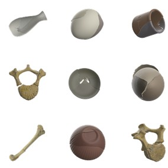
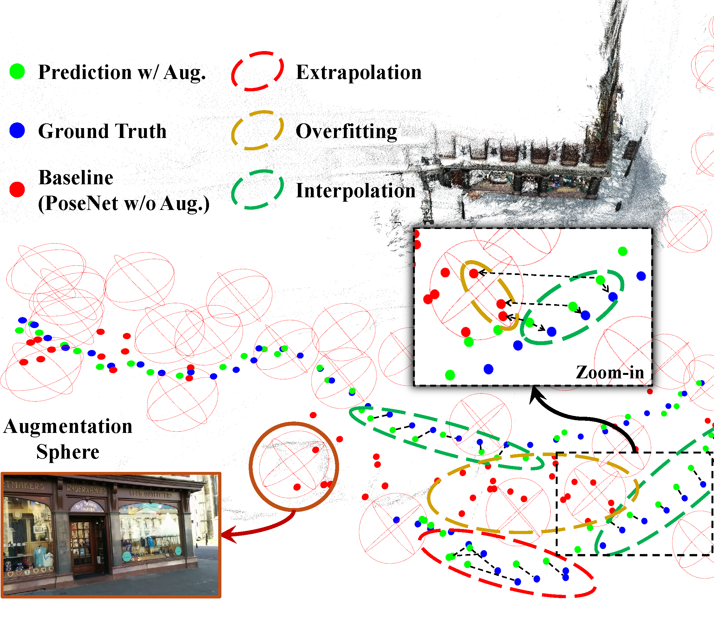
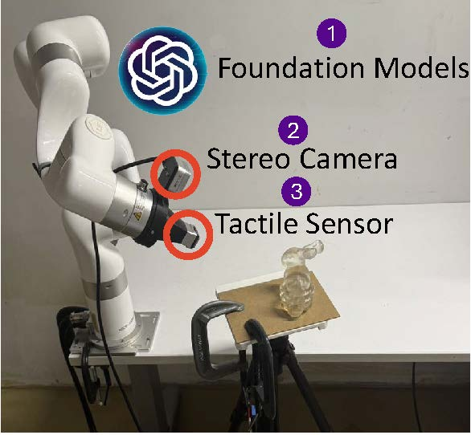
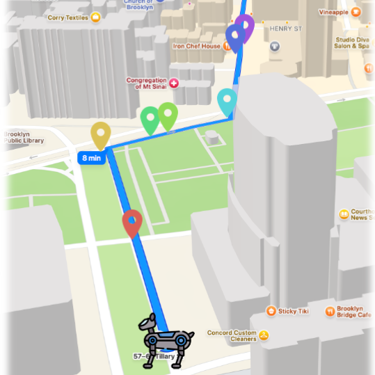
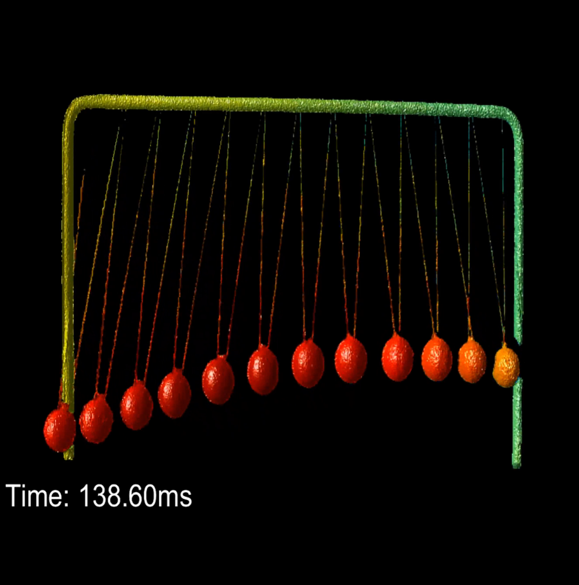
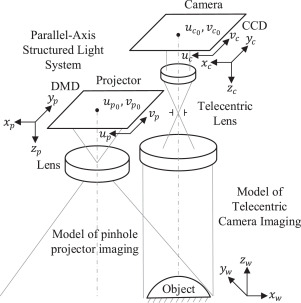

Jing Zhang | 张婧
I'm a postdoctoral researcher at AI4CE Lab@NYU led by Prof. Chen Feng and Anthrotopography Lab@NYU led by Prof. Radu Iovita .
I'm particularly interested in robotic perception, 3D computer vision, and explore the AI-powered infrastructure for data sharing and analysis in human evolution.
I did my PhD (2023) in Photogrammetry and Remote Sensing from Wuhan Universtiy, under the guidance of Prof. Bin Luo and Prof. Yajun Wang . Before this, I received my B.E. degree (2017) and M.S. degree (2019) from Wuhan University.
I enjoy dancing in my spare time and dancing helps me to be energetic longer.
Email /
Scholar /
Twitter /
LinkedIn
Recent News
[02/2025] Our paper CityWalker is accepted by CVPR 2025.
[01/2025] Our paper FusionSense is accepted by ICRA 2025.
[06/2024] I will be teaching a course on Robot Vision during the Spring 2025 semester.
[04/2024] Our paper LUWA is accepted and highlighted by CVPR 2024.
Recent Talks
[06/2025] Invited Talk at CVPR 2025 Workshop .
[01/2025] Invited Talk at NYU Adu Dhabi Institute .
Your browser does not support the video tag.

GARF: Learning Generalizable 3D Reassembly
for Real-World Fractures
Sihang Li *,
Zeyu Jinag *,
Grace Chen ,
Chenyang Xu ,
Siqi Tan ,
Xue Wang ,
Irving Fang ,
Kristof Zyskowski ,
Shannon P. McPherron ,
Radu Iovita ,
Chen Feng † ,
Jing Zhang †
ICCV , 2025
project page
/
arXiv
/
github
Sheding light on training on synthetic data to advance real-world 3D fracture assembly.
Your browser does not support the video tag.

RAP: Unleashing the Power of Data Synthesis in Visual Localization
Sihang Li* ,
Siqi Tan* ,
Bowen Chang ,
Jing Zhang ,
Chen Feng † ,
Yiming Li †
ICCV , 2025
project page
/
arXiv
/
github
Make camera localization more generalizable by addressing the data gap via 3DGS and learning gap via a two-branch joint learning with adversarial loss.
Your browser does not support the video tag.

FusionSense: Bridging Common Sense, Vision, and Touch for Robust Sparse-View Reconstruction
Irving Fang *,
Kairui Shi *,
Xujin He *,
Siqi Tan ,
Yifan Wang ,
Hanwen Zhao ,
Hung-Jui Huang ,
Wenzhen Yuan ,
Chen Feng † ,
Jing Zhang †
ICRA , 2025
project page
/
arXiv
/
github
Helping robots fuse vision, touch, and common sense via 3DGS using sparse-view data.
Your browser does not support the video tag.

CityWalker: Learning Embodied Urban Navigation from Web-Scale Videos
Xinhao Liu* ,
Jintong Li* ,
Yicheng Jiang,
Niranjan Sujay,
Zhicheng Yang ,
Juexiao Zhang ,
John Abanes ,
Jing Zhang ,
Chen Feng †
CVPR , 2025
project page
/
arXiv
/
github
Train autonomous agents for robust urban navigation using Internet-scale videos.
LUWA Dataset: Learning Lithic Use-Wear Analysis on Microscopic Images
Jing Zhang* ,
Irving Fang* ,
Hao Wu ,
Akshat Kaushik,
Alice Rodriguez,
Hanwen Zhao ,
Juexiao Zhang ,
Zhuo Zheng ,
Radu Iovita † ,
Chen Feng †
CVPR , 2024 (Highlight) project page
/
arXiv
/
github
Could Foundation Models uncover the hidden story of ancient tools?
Creating the first open-source and largest Lithic Use-Wear Analysis (LUWA) dataset and challenge Large Vision Model and Large Language and Vision Model with it.
Single-Exposure Optical Measurement of Highly Reflective Surfaces via Deep Sinusoidal Prior for Complex Equipment Production
Jing Zhang ,
Bin Luo ,
Fuqian Li ,
Xingman Niu,
Qican Zhang,
Yajun Wang †
IEEE Transactions on Industrial Informatics , 2022
Could damaged phase be recovered without training samples for HDR 3D reconstruction?
Designing deep sinusoidal prior (DSP) for damaged phase recovery.
Your browser does not support the video tag.

Superfast and Large-Depth-Range Sinusoidal Fringe Generation for Multi-Dimensional Information Sensing
Sijie Zhu *,
Zhoujie Wu *,
Jing Zhang ,
Qican Zhang,
Yajun Wang †
Photonics Research , 2022
video
Building multifocal projection system for superfast and large-depth range 3D measurement.
Deep-Learning-based Adaptive Camera Calibration for Various Defocusing Degrees
Jing Zhang ,
Bin Luo ,
Zhuolong Xiang ,
Qican Zhang ,
Yajun Wang † ,
Xin Su ,
Jun Liu ,
Lu Li ,
Wei Wang
Optics Letters , 2021 (Highlighted as an Editor’s Pick)
Improving camera calibration via target enhancement for high-fidelity 3D reconstruction.

A Convenient 3D Reconstruction Model based on Parallel-Axis Structured Light System
Jing Zhang ,
Bin Luo ,
Xin Su ,
Lu Li ,
Beiwen Li ,
Song Zhang ,
Yajun Wang †
Optics and Lasers in Engineering , 2021
Building a convenient parallel-axis structured light system to avoid shadow and occlusion.
Depth Range Enhancement of Binary Defocusing Technique based on Multi-Frequency Phase Merging
Jing Zhang ,
Bin Luo ,
Xin Su ,
Yuwei Wang ,
Xiangcheng Chen ,
Yajun Wang †
Optics Express , 2019
Proposing multi-frequency phase merging for depth range enhancement.
High Dynamic Range 3D Measurement based on Spectral Modulation and Hyperspectral Imaging
Yajun Wang ,
Jing Zhang ,
Bin Luo †
Optics Express , 2018
Building a spetral modulation system for HDR 3D measurement.
Website Visitors Map
{kind=link}